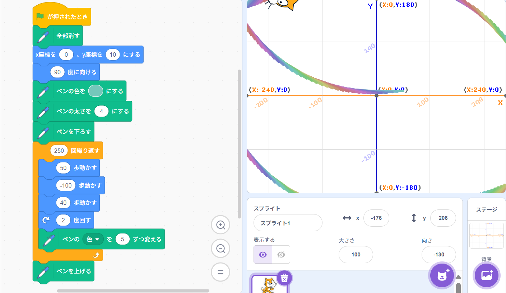
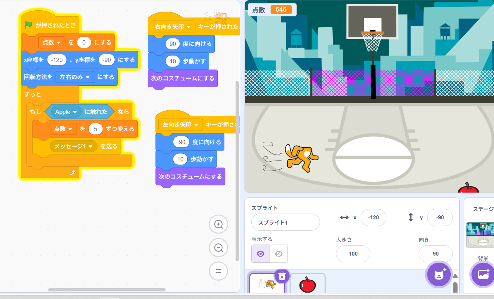

第1週目
1-1 サイエンスアート

1.内容
スクラッチを使用した初歩的なプログラミング作成をしました。様々なブロックな役割などもプログラミングを通して学び、自分が思い描く絵をスクラッチそ用いて作成した。
2.感想
自分の思い描く図形をスクラッチを用いて描くことは案外面白かった。想像を超えるおかしな図形ができたり、予想していた通りの図形ができたりと、そのようなところが面白かった。
1-2 ゲーム

1.内容
サイエンスアートの応用版といった感じ。プログラミング上にある様々なブロックを使用して少し複雑なプログラミングでリンゴが落ちてきてポイントを獲得するゲームを作成した。
2.感想
学習した内容を実践したときに自分が感じた感想を
このゲーム作成とサイエンスアートの授業は去年の高専の体験入学の時にしていたからあの時の記憶が蘇った。でも、ほとんど忘れていたのでも一回授業を受けれて良かったと思いました。
1-3 ホームページ作成
私のホームページ
1.内容
ホームページを作成した。なんかいっぱいの行列などがあり、そこに少し変化を加えると自分の考えているホームページを作成する内容でした。
2.感想
今回ホームページの仕組みに少しだけ触れた。ちょうど最近、ホームページの仕組みに気になっていたので自分にとってタイムリーな授業で嬉しかった。
各ページへのリンク
1週目のレポート
2週目のレポート
3週目のレポート
私のホームページ